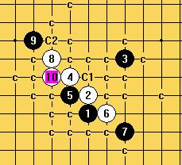
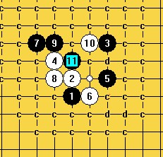

外溪月列传之后传（妖刀九传之三之后传）
#1 外溪月列传之后传（妖刀九传之三之后传） 作者：慎独 发表时间：2009-4-19 15:28:48
外溪月二打败，一打近败

8胜且唯一
［此帖子已被 慎独 在 2009-4-19 15:30:50 编辑过］
［ 潇洒 于 2009-4-19 16:30:40 时奖励此帖[金币加 20 威望加1］
［ 岳麓小棋后 于 2009-4-19 18:21:12 时花20金币送鲜花一朵］
#2 Re:外溪月 作者：失落刀 发表时间：2009-4-19 17:16:02
=======上图对应的爱五子棋谱代码如下，以便你拆解：========
h8h9j11g10j9
======================================================
这个5，我没有地毯完，后来兴趣转移就放弃了。楼主指教一个图吧。
#3 Re:外溪月 作者：wd1988 发表时间：2009-4-19 18:16:10
失落刀，不知道我这个你有没有
=======上图对应的爱五子棋谱代码如下，以便你拆解：========
h8h9j11g10j9i8f11g9
======================================================
#4 Re:外溪月 作者：岳麓小棋后 发表时间：2009-4-19 18:20:41
楼主对妖刀很有研究呀，佩服，佩服！！
#5 Re:外溪月 作者：失落刀 发表时间：2009-4-19 18:25:13
=======上图对应的爱五子棋谱代码如下，以便你拆解：========
h8h9j11g10j9i8f11g9g11
======================================================
#6 Re:外溪月 作者：wd1988 发表时间：2009-4-19 18:28:38
失落刀，你这个也太靠前了，干脆把你没解决的最强一路发出来吧，否则我压根不知道你之后会如何应对，哪些明白，哪些不明白#7 Re:外溪月 作者：失落刀 发表时间：2009-4-19 18:31:40
hehe ,当年和真心老师逆刃老师空龙老师拆过，印象中地毯起来很繁琐，后来我就不玩了。#8 Re:外溪月 作者：慎独 发表时间：2009-4-19 23:40:22
=======上图对应的爱五子棋谱代码如下，以便你拆解：========
h8h9j11g10j9i8f11g9g11i11
======================================================
#9 Re:外溪月 作者：失落刀 发表时间：2009-4-20 8:00:21
=======上图对应的爱五子棋谱代码如下，以便你拆解：========
h8h9j11g10j9i8f11g9g11i11h10
======================================================
#10 Re:外溪月 作者：学生刀 发表时间：2009-4-20 11:53:44
=======上图对应的爱五子棋谱代码如下，以便你拆解：========
h8h9j11g10j9i8f11g9g11i11h10i9i10i6j10j8
======================================================
黑棋杀不出 要地毯繁琐
=======上图对应的爱五子棋谱代码如下，以便你拆解：========
h8h9j11g10j9i8f11g9g11i11h10i9i10i6j10i7i5j8
======================================================
黑必胜了
#11 Re:外溪月 作者：逆刃 发表时间：2009-4-20 12:34:22
一打黑近败？还是白近败啊？呵呵。#12 Re:外溪月 作者：慎独 发表时间：2009-4-20 12:37:05
10楼的朋友，其实问题就在于这个12手上，你选的是黑石的12手，之后是导致黑必胜的情形！请认真考虑12手!［此帖子已被 慎独 在 2009-4-20 12:38:21 编辑过］
#13 Re:外溪月 作者：学生刀 发表时间：2009-4-20 12:53:58
说话要负责 你自己拆过没有 必胜？你自己用黑石拆出必胜 就能叫必胜？ 不要把黑石假杀说必胜好吗？不要给自己丢脸了。
#14 Re:外溪月 作者：失落刀 发表时间：2009-4-20 13:00:29
好好讨论交流，讨论一个棋局变化希望能摩擦出思想的火花，不是其他。#15 Re:外溪月 作者：学生刀 发表时间：2009-4-20 13:03:32
我怀疑楼主盗用别人研究自己打地毯，一打近败怎么个近败法 你拆过给个最强看看#16 Re:外溪月 作者：wd1988 发表时间：2009-4-20 15:56:04
学生刀，有些东西，拿到了就可以啦，不用太较真。。。就算他盗用了别人的研究，自己重新打地毯，对于我们这些压根不知道这个研究内容的人，毕竟还是一件好事。总比他偷偷藏起来好吧#17 Re:Re:外溪月 作者：慎独 发表时间：2009-4-20 16:06:20
引用：说话要负责，我和五子棋界的朋友拆棋的时候，恐怕朋友你还没接触五子棋！
原文由 学生刀 发表于 2009-4-20 13:03:32 :
我怀疑楼主盗用别人研究自己打地毯，一打近败怎么个近败法 你拆过给个最强看看
#18 Re:外溪月 作者：学生刀 发表时间：2009-4-20 16:22:43
又来比时间了 时间长只能说明你更加丢人 黑石假杀变成必胜
=======上图对应的爱五子棋谱代码如下，以便你拆解：========
h8h9j11g10j9i8f11g9g11i11h10i9
======================================================
这个12 怎么就黑必胜呢 必胜也是14手的事情
=======上图对应的爱五子棋谱代码如下，以便你拆解：========
h8h9j11g10j9i8f11g9g11i11h10i9i10i6j10j8j12j13l10k10i13k11h12f10k12i12h11g12l13m14l12l14
======================================================
除非你去跟黑石一样把下面冲4了 否则我是没看到怎么必胜
#19 Re:外溪月 作者：刀魂 发表时间：2009-4-20 16:29:10
呵呵，，刀学生，，，做人别太刀魂了哟［ 失落刀 于 2009-4-20 16:40:19 时惩罚此帖，发帖者[金币减20 威望减1］
#20 Re:外溪月 作者：学生刀 发表时间：2009-4-20 16:31:25
事实说话 拿名号来压我是行不通的#21 Re:外溪月 作者：刀魂 发表时间：2009-4-20 16:34:07
别人 敢这么说话，，，肯定是属于前辈级别的人了，我们这些做小的，应该尊重他们，乃至敬重他们。。。总之做人不能像
刀魂那样。。。钻牛角尖
［ 失落刀 于 2009-4-20 16:39:22 时惩罚此帖，发帖者[金币减20 威望减1］
#22 Re:Re:外溪月 作者：慎独 发表时间：2009-4-20 16:46:30
引用：看清这个贴，问题在于你的12
原文由 慎独 发表于 2009-4-20 12:37:05 :
10楼的朋友，其实问题就在于这个12手上，你选的是黑石的12手，之后是导致黑必胜的情形！请认真考虑12手!［此帖子已被 慎独 在 2009-4-20 12:38:21 编辑过］
#23 Re:外溪月 作者：慎独 发表时间：2009-4-20 16:53:51
现在学棋的青年应该好好考虑探讨，我可以负责任地说，下棋是一种能力，下棋更是一种态度；态度会决定你在五子棋上能走多远，也决定你在人生路上能攀多高！#24 Re:外溪月 作者：学生刀 发表时间：2009-4-20 17:01:10
不要装了 搞一大堆理由逃避错误吗 如果你指出必胜 我认错就是了#25 Re:Re:外溪月 作者：刀魂 发表时间：2009-4-20 17:03:09
引用：
原文由 刀魂 发表于 2009-4-20 16:34:07 :别人 敢这么说话，，，肯定是属于前辈级别的人了，我们这些做小的，应该尊重他们，乃至敬重他们。。。总之做人不能像
刀魂那样。。。钻牛角尖
［ 失落刀 于 2009-4-20 16:39:22 时惩罚此帖，发帖者[金币减20 威望减1］
失落刀失落刀失落刀失落刀失落刀失落刀失落刀失落刀失落刀失落刀失落刀失落刀失落刀失落刀失落刀失落刀失落刀失落刀失落刀
我都说了，，，有种你就把我 威望扣完，别总是删我 帖子。。。我知道你是 超级版主。。。come on baby。。。
#26 Re:外溪月 作者：学生刀 发表时间：2009-4-20 17:13:10
这个年头还充大 ，名号真那么有用？错了拿不出证据还要充胖子。#27 Re:外溪月 作者：逆刃 发表时间：2009-4-20 23:36:39
=======上图对应的爱五子棋谱代码如下，以便你拆解：========
h8h9j11g10j9i8f11g9g11i11h10g7i9j8
======================================================
会是这个12么？虽然没怎么研究，但是感觉黑棋杀不出来，而又防不住白棋，所以只会是挣扎一段时间后自杀。地毯起来需要时间，所以我不做谱，哈哈，谁有时间可以做做哦。
#28 Re:外溪月 作者：学生刀 发表时间：2009-4-21 18:04:14
哪位大师来解释一下黑必胜
=======上图对应的爱五子棋谱代码如下，以便你拆解：========
h8h9j11g10j9i8f11g9g11i11h10i9i10
======================================================
13 手后黑必胜
=======上图对应的爱五子棋谱代码如下，以便你拆解：========
h8h9j11g10j9i8f11g9g11i11h10i9i10i6
======================================================
先从这个14下手吧
#29 Re:外溪月 作者：忧郁的双眼 发表时间：2009-4-22 0:46:54
回楼上
12手应该象逆刃那么走
#30 Re:外溪月 作者：学生刀 发表时间：2009-4-22 8:09:56
12手白必胜各种下法， 我现在问12后 如何黑必胜？？？
（用黑石找点的技巧谁不知道 第二好点而已）
［此帖子已被 学生刀 在 2009-4-22 8:10:41 编辑过］
#31 Re:外溪月 作者：五柳先生 发表时间：2009-4-22 19:00:29
 楼上的,别人不说肯定他的道理,你强求不来的,做人要谦虚要低调,是真是假心中知道就行了,何必如此张扬,,,,,低调一点
楼上的,别人不说肯定他的道理,你强求不来的,做人要谦虚要低调,是真是假心中知道就行了,何必如此张扬,,,,,低调一点
#32 Re:外溪月 作者：学生刀 发表时间：2009-4-22 20:23:18
不是不说 ，是更本没有必胜！
#33 Re:外溪月 作者：冷面孤煞 发表时间：2009-4-23 8:25:34
 最近好象看见的都是吵呀吵,还爱五一个安静,谢谢大家,来这里是共同交流.......共同进步吧
最近好象看见的都是吵呀吵,还爱五一个安静,谢谢大家,来这里是共同交流.......共同进步吧
#34 Re:外溪月 作者：学生刀 发表时间：2009-4-23 9:37:38
不是我想吵，我放上面自己拆过的变化，别人说我下了黑石步 必败了，典型的侮辱人，黑石下的都是错的吗，如此轻率评价，自己又没真正拆过，我要给予其反击。#35 Re:外溪月 作者：刀学生 发表时间：2009-4-30 20:57:51
真心讲课里面提到也是这个12
#36 Re:外溪月 作者：26 发表时间：2009-5-1 0:34:53
=======上图对应的爱五子棋谱代码如下，以便你拆解：========
h8h9j11g10j9i8f11g9g11i11h10g7
======================================================
这个12可以决定外溪月命运吗？（外残月变化通外溪月。）。
#37 Re:外溪月 作者：逆刃 发表时间：2009-5-1 1:08:47
=======上图对应的爱五子棋谱代码如下，以便你拆解：========
h8h9j11g10j9i8f11g9g11i11h10g7d11
======================================================
郁闷去吧，这个12是白败。
［ 失落刀 于 2009-5-1 12:37:08 时奖励此帖[金币加 20 威望加1］
#38 Re:外溪月 作者：失落刀 发表时间：2009-5-1 12:38:48
谢谢37楼逆刃，虽然是必败，但这个12结论明确了。
#39 Re:外溪月 作者：失落刀 发表时间：2009-5-1 16:37:04
一个朋友的图，见下。
c是必败
d是代表基本必败
可以胜的12有吗？在哪里呢？
#40 Re:外溪月 作者：失落刀 发表时间：2009-5-2 17:00:03
如果拆出来白胜，就等于外残月和外溪月都白必胜。这样的话没有结论的妖刀就从九个变成了七个。#41 Re:外溪月 作者：学生刀 发表时间：2009-5-2 21:31:32
拆了一个变化
=======上图对应的爱五子棋谱代码如下，以便你拆解：========
h8h9j11g10j9i8f11g9g11i11h10i9i10i6j7g6g8f6j8j10j6j5h11g12i7h7f5i4
======================================================
白必胜
#42 Re:外溪月 作者：刀学生 发表时间：2009-5-3 12:19:00
a-f难道a最强？#43 Re:外溪月 作者：吐血刀 发表时间：2009-5-3 12:37:57
7个没被地毯的25而已，不是强弱顺序。#44 Re:外溪月 作者：刀学生 发表时间：2009-5-3 12:50:19
=======上图对应的爱五子棋谱代码如下，以便你拆解：========
h8h9j11g10j9i8f11g9g11i11h10i9i10i6j7g6g8f6j8j10j6j5h11g12i7h7h6k9l8l7i5h4k4k5f8e9f9f12
======================================================
不在家 发两个必胜变化回家好记录
［ 吐血刀 于 2009-5-3 13:18:20 时花20金币送鲜花一朵］
#45 Re:外溪月 作者：刀学生 发表时间：2009-5-3 13:06:02
=======上图对应的爱五子棋谱代码如下，以便你拆解：========
h8h9j11g10j9i8f11g9g11i11h10i9i10i6j7g6g8f6j8j10j6j5h11g12i7h7h6k9l8l7i5h4f8e9f9f12h12i4j4g7
======================================================
［ 失落刀 于 2009-5-3 19:37:24 时花20金币送鲜花一朵］
#46 Re:外溪月 作者：吐血刀 发表时间：2009-5-3 13:17:34
刀学生辛苦老。#47 Re:外溪月 作者：刀学生 发表时间：2009-5-3 13:41:32
=======上图对应的爱五子棋谱代码如下，以便你拆解：========
h8h9j11g10j9i8f11g9g11i11h10i9i10i6j7g6g8f6j8j10j6j5h11g12i7h7h6k9l8l7i5h4g7j4k4k5
======================================================
=======上图对应的爱五子棋谱代码如下，以便你拆解：========
h8h9j11g10j9i8f11g9g11i11h10i9i10i6j7g6g8f6j8j10j6j5h11g12i7h7h6k9l8l7i5h4g7j4i4g5e7i3j2k5h2j3
======================================================
=======上图对应的爱五子棋谱代码如下，以便你拆解：========
h8h9j11g10j9i8f11g9g11i11h10i9i10i6j7g6g8f6j8j10j6j5h11g12i7h7h6k9l8l7i5h4g7j4i4g5k5l4e7j2i3i2
======================================================
［ 失落刀 于 2009-5-3 19:38:01 时花20金币送鲜花一朵］
#48 Re:外溪月 作者：刀学生 发表时间：2009-5-3 13:46:27
=======上图对应的爱五子棋谱代码如下，以便你拆解：========
h8h9j11g10j9i8f11g9g11i11h10i9i10i6j7g6g8f6j8j10j6j5h11g12i7h7h6k9l8l7i4f7
======================================================
［ 失落刀 于 2009-5-3 19:38:30 时花20金币送鲜花一朵］
#49 Re:外溪月 作者：刀学生 发表时间：2009-5-3 14:03:36
=======上图对应的爱五子棋谱代码如下，以便你拆解：========
h8h9j11g10j9i8f11g9g11i11h10i9i10i6j7g6g8f6j8j10j6j5h11g12i7h7h6k9l8l7f5i4k6h5j3i3i2g5h4i5k5l4l3g4g3e8f7f9e9c6d7e4
======================================================
=======上图对应的爱五子棋谱代码如下，以便你拆解：========
h8h9j11g10j9i8f11g9g11i11h10i9i10i6j7g6g8f6j8j10j6j5h11g12i7h7h6k9l8l7f5i4k6h5j3i3g5f4h4e8f7i5i2e6
======================================================
［ 失落刀 于 2009-5-3 19:38:50 时花20金币送鲜花一朵］
#50 Re:外溪月 作者：刀学生 发表时间：2009-5-3 14:15:46
=======上图对应的爱五子棋谱代码如下，以便你拆解：========
h8h9j11g10j9i8f11g9g11i11h10i9i10i6j7g6g8f6j8j10j6j5h11g12i7h7h6k9l8l7f7i4k6g5h4i5
======================================================
=======上图对应的爱五子棋谱代码如下，以便你拆解：========
h8h9j11g10j9i8f11g9g11i11h10i9i10i6j7g6g8f6j8j10j6j5h11g12i7h7h6k9l8l7k7i5
======================================================
［ 失落刀 于 2009-5-3 19:39:07 时花20金币送鲜花一朵］
#51 Re:外溪月 作者：刀学生 发表时间：2009-5-3 14:52:01
=======上图对应的爱五子棋谱代码如下，以便你拆解：========
h8h9j11g10j9i8f11g9g11i11h10i9i10i6j7g6g8f6j8j10j6j5h11g12i7h7h6k9l7k8k7m7l8i5h5i4i3h3g2k4l3f9e9f5e4g4
======================================================
［ 失落刀 于 2009-5-3 19:39:37 时花20金币送鲜花一朵］
#52 Re:外溪月 作者：学生刀 发表时间：2009-5-3 19:14:38
=======上图对应的爱五子棋谱代码如下，以便你拆解：========
h8h9j11g10j9i8f11g9g11i11h10i9i10i6j7g6g8f6j8j10j6j5h11g12f9i5i7h7
======================================================
［ 失落刀 于 2009-5-3 19:39:55 时花20金币送鲜花一朵］
#53 Re:外溪月 作者：学生刀 发表时间：2009-5-3 19:59:30
=======上图对应的爱五子棋谱代码如下，以便你拆解：========
h8h9j11g10j9i8f11g9g11i11h10i9i10i6j7g6g8f6j8j10j6j5h11g12l7k8k7i7i5l8m7n7
======================================================
之后黑防点很多很强大
=======上图对应的爱五子棋谱代码如下，以便你拆解：========
h8h9j11g10j9i8f11g9g11i11h10i9i10i6j7g6g8f6j8j10j6j5h11g12l7k8k7i7i5l8m7n7f9
======================================================
还剩这个33 日后再说
［ 失落刀 于 2009-5-3 20:23:44 时花20金币送鲜花一朵］
#54 Re:外溪月 作者：学生刀 发表时间：2009-5-4 15:24:28
=======上图对应的爱五子棋谱代码如下，以便你拆解：========
h8h9j11g10j9i8f11g9g11i11h10i9i10i6j7g6g8f6j8j10j6j5h11g12l7k8k7i7i5l8m7n7f9e6h6h12k9h7f7
======================================================
我卡住了 
［ 失落刀 于 2009-5-4 15:40:47 时花20金币送鲜花一朵］
［ 失落刀 于 2009-5-4 15:41:04 时花20金币送鲜花一朵］
卡主了，就送两朵花鼓励下。
#55 Re:外溪月 作者：学生刀 发表时间：2009-5-4 16:12:13
=======上图对应的爱五子棋谱代码如下，以便你拆解：========
h8h9j11g10j9i8f11g9g11i11h10i9i10i6j7g6g8f6j8j10j6j5h11g12l7k8k7i7i5l8m7n7f9e6h6h12k9h7f7f8e7f12e12g3f5f3
======================================================
此46 必胜
［ 失落刀 于 2009-5-4 16:12:50 时花20金币送鲜花一朵］
#56 Re:外溪月 作者：学生刀 发表时间：2009-5-4 17:32:19
=======上图对应的爱五子棋谱代码如下，以便你拆解：========
h8h9j11g10j9i8f11g9g11i11h10i9i10i6j7g6g8f6j8j10j6j5h11g12l7k8k7i7i5l8m7n7f9e6h6h7f7h12k9f8d6g3f5
======================================================
最后死在沙滩上了 这里又卡了
=======上图对应的爱五子棋谱代码如下，以便你拆解：========
h8h9j11g10j9i8f11g9g11i11h10i9i10i6j7g6g8f6j8j10j6j5h11g12l7k8k7i7i5l8m7n7f9e10
======================================================
还是考虑此34吧
#57 Re:外溪月 作者：失落刀 发表时间：2009-5-14 13:42:30
帮江南新绿发的图。
#58 Re:外溪月 作者：学生刀 发表时间：2009-5-14 20:39:11
=======上图对应的爱五子棋谱代码如下，以便你拆解：========
h8h9j11g10j9i8f11g9g11i11h10i9i10i6j7g6g8f6j8j10j6j5h11g12l7k8k7i7i5l8m7n7f9e10
======================================================
用此34
#59 Re:外溪月 作者：失落刀 发表时间：2009-5-14 22:33:09
据说江南新绿地毯了所有的25.参考58楼。
大家继续终结另一个15吧。
#60 Re:外溪月 作者：淡红的秋樱 发表时间：2009-5-15 20:56:47
=======上图对应的爱五子棋谱代码如下，以便你拆解：========
h8h9j11g10j9i8f11g9g11i11h10i9i10i6j10
======================================================
#61 Re:外溪月 作者：逆刃 发表时间：2009-5-15 21:02:42
此15黑棋剩余优势还比较大，有很多的冲四和活三。#62 Re:外溪月 作者：刀学生 发表时间：2009-5-15 21:44:33
一大堆交换后 白棋难杀#63 Re:外溪月 作者：失落刀 发表时间：2009-5-15 22:12:49
发几个图呀，或者对16先统一下意见。#64 Re:外溪月 作者：刀学生 发表时间：2009-5-15 22:22:26
=======上图对应的爱五子棋谱代码如下，以便你拆解：========
h8h9j11g10j9i8f11g9g11i11h10i9i10i6j10j8
======================================================
#65 Re:外溪月 作者：吐血刀 发表时间：2009-5-16 9:04:56
#66 Re:外溪月列传之后传（妖刀九传之三之后传） 作者：失落刀 发表时间：2009-8-15 16:17:50
这个没人来挑战啊。。。#67 Re:外溪月列传之后传（妖刀九传之三之后传） 作者：飞哥 发表时间：2010-4-5 18:12:32
=======上图对应的爱五子棋谱代码如下，以便你拆解：========
h8h9j11g10j9i8f11g9g11i11h10i9i10i6j10j8j12j13l10k10i13k11h12f10k12i12h11g12l13m14l12l14j14k15m11n10n12m12k9o13l9l11k6
====================================================
这个15很复杂的，这路最强变化的地毯不容易吧？谁发下图
［此帖子已被 飞哥 在 2010-4-5 18:17:10 编辑过］